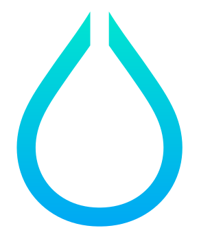
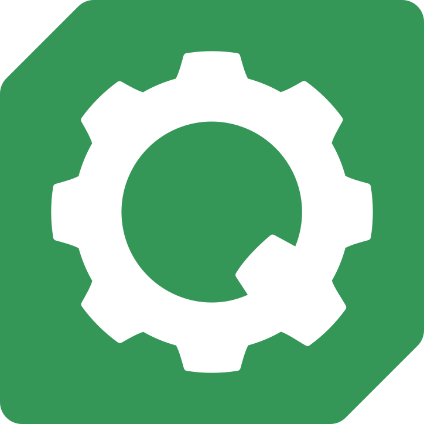

cat sponsorships/hyprland.md

The tiling Wayland compositor that has been at the heart of Omarchy since day one, and one of its three core technologies. The sponsorship lets Vaxry work on it without having to think about commercial development or fundraising — and it freed the existing Hyprperks program to be released for everyone, for free. The deal runs three years, with an option for another two, and starts October 10.
cat sponsorships/quickshell.md

The desktop construction kit the Omarchy shell is built on: one long-running process drawing the bar, the menu, the notifications, the OSDs and the lock screen. It shipped in Quattro, and over a thousand plugins followed in the first week. Termed for three years out the gate.
cat sponsorships/mise.md
The tool that manages the language runtimes and, just as importantly, ships every coding-agent CLI as a lazy-loading stub. A new harness is one command away instead of a packaging project — which is what keeps Omarchy moving at the pace agent tooling actually ships.
Read the announcement · mise by jdx